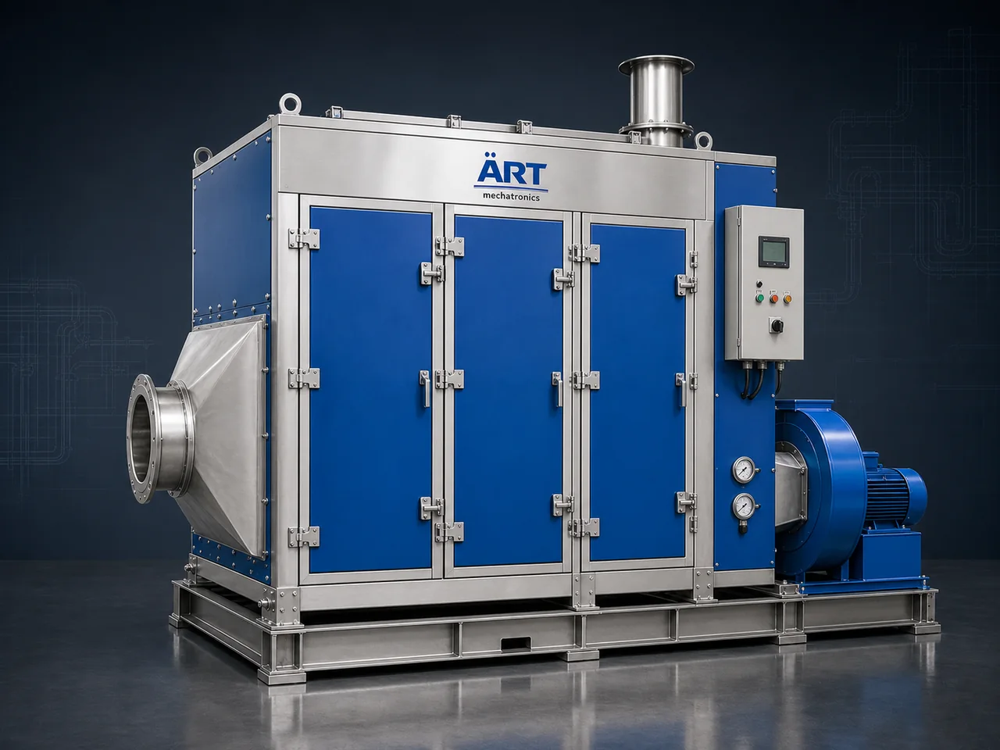

Air Pollution Control Equipment & Systems (Industrial Dust, Fume & Emission Control Solutions)
Air pollution control equipment plays a critical role in modern industries by controlling, filtering, and eliminating dust, fumes, gases, and airborne pollutants generated during manufacturing processes.

About the Air Pollution Control Equipment
With increasing environmental regulations and the need for workplace safety, industries must adopt advanced air pollution control systems to ensure clean air, regulatory compliance, and sustainable operations.
ART Mechatronics offers complete turnkey solutions for air pollution control, providing a wide range of equipment including dust collectors, wet scrubbers, fume extraction systems, cyclone separators, and centralized dust collection systems, designed for high efficiency, reliability, and long-term industrial performance.
One machine, many names
Buyers search for this equipment under many terms — we manufacture all of them:
Types of Air Pollution Control Equipment
🌪️ 1. Dust Collection Systems Used for removing solid dust particles. Includes:
- Dust Collector Machines
- Bag House Dust Collectors
- Pulse Jet Dust Collectors
- Cartridge Dust Collectors
- Flat Bag Dust Collectors
Used in:
- Food, pharma, cement, steel
🌪️ 2. Dust Extraction & De-Dusting Systems Used for capturing dust at multiple points. Includes:
- Dust Extraction Systems
- Centralized Dust Collection Systems
- De-Dusting Systems
🌪️ 3. Cyclone & Multi Cyclone Separators Used for coarse particle separation. Includes:
- Cyclone Dust Collector
- Multi Cyclone Dust Collector
💨 4. Fume Extraction Systems Used for removing smoke, fumes, and gases. Includes:
- Welding Fume Extraction System
- Smoke Extraction System
- Industrial Fume Extractors
💧 5. Wet Scrubber Systems Used for gas and chemical emission control. Includes:
- Wet Scrubber
- Gas Scrubber
- Chemical Scrubber
Working Principle of Air Pollution Control System
Pollutants include:
Pollutants are captured using:
Air is transported through:
Depending on system:
Clean air is released safely or recirculated.
Industries Using Air Pollution Control Equipment
🍃 Food & Agro Industries
- Spices, flour mills, rice mills
- Coffee, tea, snacks
💊 Pharma & Chemical Industry
- Powder handling
- Chemical processing
🏭 Steel & Metal Industry
- Fabrication
- Foundries
- Welding
🏗️ Cement & Construction
- Cement plants
- Sand & stone
⚗️ Chemical & Industrial
- Detergents, paints, pigments
♻️ Recycling & Plastic Industry
- Plastic granules
- Waste processing
🔋 Advanced Manufacturing
- Battery & lithium
- Electronics
Features & Advantages
✔ Improved air quality and worker safety ✔ Compliance with environmental regulations ✔ High-efficiency pollutant removal ✔ Reduced equipment wear and maintenance ✔ Energy-efficient operation ✔ Custom-designed solutions for every industry ✔ Scalable systems for small to large plants
Technical Highlights
- Airflow Capacity: Custom (CFM based)
- Filtration Type: Bag / Cartridge / Cyclone / Wet
- System Type: Centralized / Modular
- Construction: Mild Steel / Stainless Steel
- Automation: PLC-based control systems
Turnkey Air Pollution Control Solutions
ART Mechatronics provides:
- Complete system design & engineering
- Ducting layout planning
- Equipment manufacturing
- Installation & commissioning
- Automation integration
- After-sales service & AMC
Why Choose Art Mechatronics
- Expertise in industrial pollution control systems
- Wide range of solutions for multiple industries
- High-efficiency and durable equipment
- Customized plant-specific designs
- Proven performance across sectors
Applications
- Industrial Manufacturing Plants
- Food Processing Units
- Chemical & Pharma Plants
- Steel & Foundry Units
- Construction Material Plants
Get pricing & specs for the Air Pollution Control Equipment
Share the product, target capacity, current process and plant location. These details help our engineers discuss the right machine or line configuration.
One partner, from design to start-up
ART Mechatronics designs, manufactures, installs and commissions your Air Pollution Control Equipment solution with regional presence in India, UAE and Thailand.